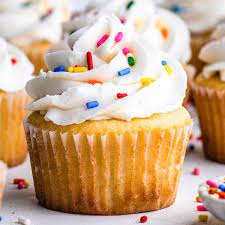

Cupcake

Description
This is an easy vanilla cupcake recipe. I am kidding
Ingredients
- Sugar - 3/4 Cup
- Softened Butter - 2/3 cup
- Large Eggs - 3x
- Flour - 1 1/2 cups
- Vanilla Extract - 1 teaspoon
Steps
- Gather all ingredients. Preheat the oven to 350 degrees F (175 degrees C). Grease a 12-cup muffin tin or line cups with paper liners.
- Beat sugar and butter together in a large bowl with an electric mixer until light and fluffy. Add eggs one at a time, beating well after each addition.
- Beat in vanilla extract. Stir in flour just until mixed; spoon batter into the prepared muffin cups, filling each 3/4 full.
- Bake in the preheated oven until the tops spring back when lightly pressed, 18 to 20 minutes. Cool in the tin briefly before transferring to a wire rack to cool completely.